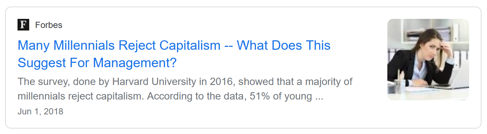

Should Student Loan Debt Be Cancelled?
the answer is yes
The Student Debt Crisis

College isn't cheap. According to the U.S. Bureau of Labor Statistics, without taking inflation into account, average college tuition and fees have increased by 1200%. The rise can be explained by multiple factors, such as decrease of state funding, the profitizing of education and increase in demand. Even with grants, students are often forced to seek aid or take out loans. A student loan is borrowed money that needs to be paid back with interest rates that are either fixed or rise over time. The nature of loans is that they can be very predatory and that has created an immense debt crisis, the total being over $1,810,663,562,000. College debt has put a strain on the mental health and financial freedom of tens of millions of people in the US. Not only that, but it has disproportionately affected people of color. It is crucial that all student debt be cancelled and education be made more accessible to all people.
Boosting the Economy and Mental Health

A few quick google searches show right off the bat that a majority of millenials reject capitalism, and a majority of people with student debt say their loans weren't worth it. Multiple news sources also state that having debt, students or not, negatively impacts people's mental and physical health (which makes sense). Not being able to pay off student loans also impacts their economic wellbeing and the economy as a whole. Businessinsider.com, a financial and business news website, states that forgiving student loans would really help the economy by opening up more opportunities and boosting the GDP which is an indicator of economic growth.
Another important point relating to the state of the economy is that the government is FULLY capable of forgiving all student debt. Wall Street and large corporations being bailed out is no new occurence. During March 2020, the US government carried out plans for a $2 trillion deal was meant to support citizens financially stricken by COVID-19. According to a promarket.org article covering other aspects of the bill, an additional $4-6 trillion was to be "lent to big corporations and banks", "bail out money market funds, multi-trillion-dollar unregulated bank-like deposits for the superrich" and "for the government through the Federal Deposit Insurance Corporation to guarantee trillions of dollars of risky bank debt".
Folks, that's wild. If the government is able to consistently shell out trillions of dollars for big corporations, why can't they end the student debt crisis?
Racial Inequality in Education

The way the education system has been structured by default, basing admission to colleges off of good test scores and increasingly high tuition and fees, is classist and make it so that people of color are put at a disadvantage (not to mention the implicit bias they face when navigating through society as a whole). Multiple different articles agree that black and hispanic people struggle to not only get into colleges that spend more on each student, but a large percentage also end up getting into for-profit colleges (owned by profit-seeking businesses) which can leave them in more debt after taking out loans.
One may be surprised to learn that even the beloved ice cream company Ben and Jerry's, a company advocating for many progressive changes has a page discussing systemic racism in education. It states in the post-secondary school section:
"...black students routinely take on more debt than white students to go to college in the first place, making it all the more difficult to accumulate wealth afterward. That, of course, puts pressure on graduates to find jobs. But guess what? Black graduates are twice as likely to be unemployed as white graduates."
In order to lessen the wealth gap between races, it is important to reevaluate the current education system and take into account how society's perspective on race and class are affecting the success of students and the amount of debt they leave college with.
 Image source: Liu, T., Yang, E., & Wang, Z. (2019). Income Inequality: How Do Racial and Gender Differences Influence the Incomes in US
Image source: Liu, T., Yang, E., & Wang, Z. (2019). Income Inequality: How Do Racial and Gender Differences Influence the Incomes in US
The Trolley Problem
Okay, first of all, let's lay it out straight: if you believe that people need to suffer through immense amounts of debt just because you did, you kinda suck.
It should not be normal for people to have to take out loans in order to even think about pursuing a higher education. Many who oppose student debt forgiveness argue that students would come to expect more forgiveness in the future. Ideally, they would be correct- the government is fully capable of providing that money and education should not be so expensive as to require that in the first place. Some say that forgiving that debt would only benefit those who attended college, while people who didn't are still worse off. Again, by lowering costs and debts, schools become more accessible to those who currently struggle to gain admission.
Not only are most arguments against the cause contradictory, workers steeped in debt right after coming out of college benefit the wealthy and it is only reasonable that the elite want to fight against increased debt forgiveness to continue maintaining the wealth gap. The opponents of student loan forgiveness aren’t afraid that it won’t work; they’re afraid that it will work. That is why it is so important to take charge and take steps to fix the student debt crisis, make all levels of education more accessible to people of all groups and as a result, to redistribute power in society to the community.